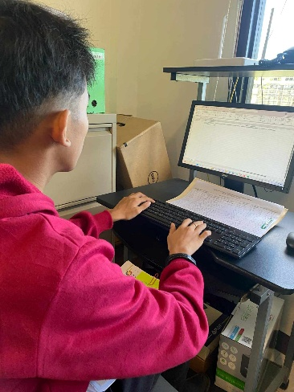
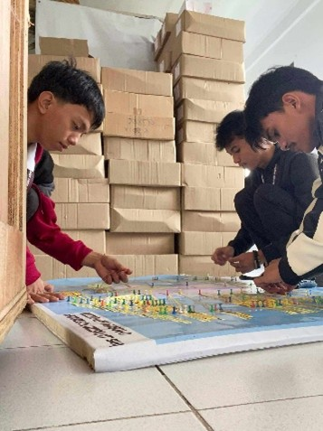
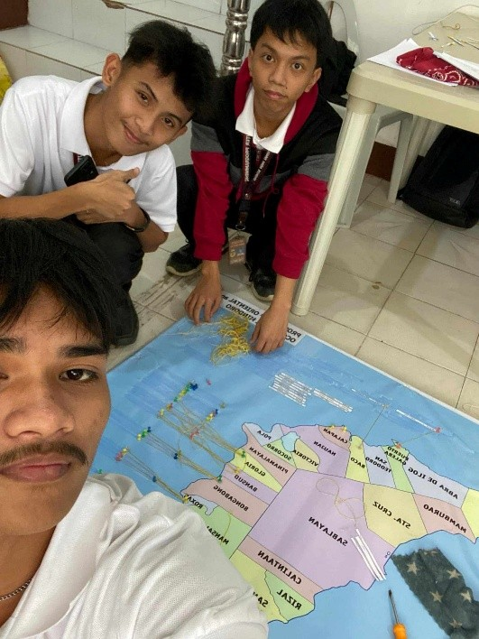
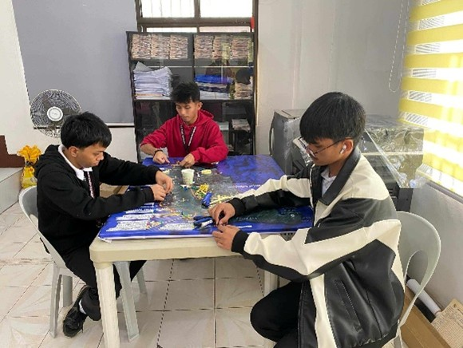
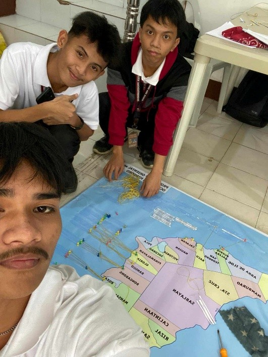
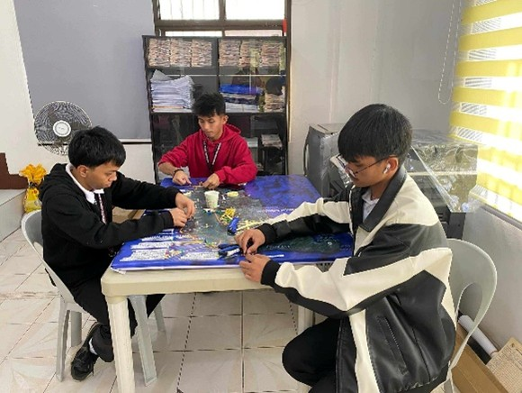
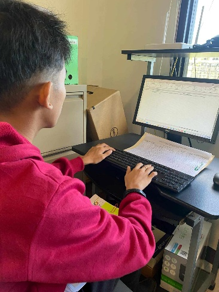
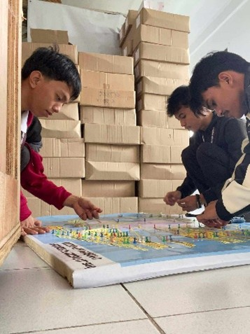
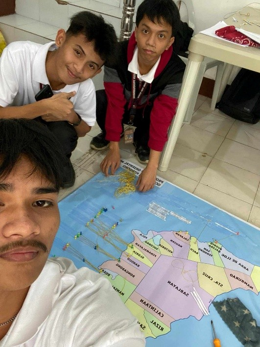
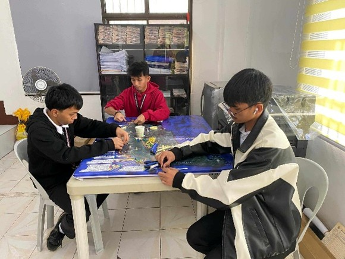

Week Two Experience
  



Week Two Experience
 


On the first day of 2nd Week Immersion, learning how to structure data properly in Excel was a valuable skill applicable to many workplaces. On the second day, working on mapping emphasized the importance of organization and accuracy in handling geographic data. The third day involved supporting various office tasks, reinforcing the value of teamwork and cooperation. On the fourth day, engaging in hands-on activities provided a deeper understanding of proper storage and inventory management. Finally, on the last day, wrapping up our tasks brought a sense of fulfillment and a greater appreciation for the work environment.